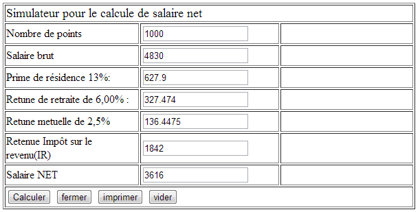

Enoncé Exament 2013 :
Un établissement souhaite réaliser un simulateur pour le calcul de salaire net d'un fonctionnaire en fonction de son indice, sachant que:
- le salaire brut est égal à l'indice multiplié par la valeur du point
- la valeur du point est de 4.83
- Retenue de la retraite 6.00%
- Retenue Mutuelle de 2.5%
- Prime de Résidence de 13%
- Retenue Impôt sur le revenu (I.R)
Le barème de calcul d’impôt sur le revenu se présente comme suit :

- Réaliser une fonction (en JavaScript ou Jquery) qui permet de calculer le salaire Net sachant que :
- Réaliser une interface HTML pour calculer le salaire net d’un fonctionnaire (Voir l’interface Annexe 01) (2,5 pt)
- Réaliser une fonction JavaScript de validation des valeurs saisies. (1,5 pt)
Salaire Net=Salaire Brut* + Prime de résidence - les retenues. (3 pt)
(*) : Salaire Brut=(valeur du point)*(nombre de points) (à saisir par l’utilisateur)
